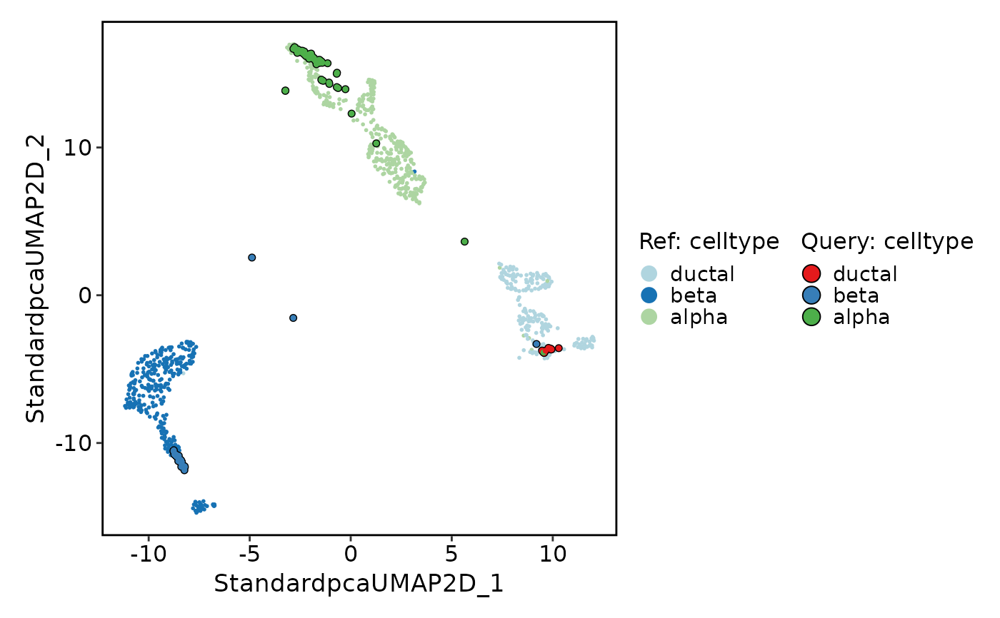

Performs single-cell reference mapping using the K-nearest neighbor (KNN) method. It takes two single-cell datasets as input: srt_query and srt_ref. The function maps cells from the srt_query dataset to the srt_ref dataset based on their similarity or distance.
Usage
RunKNNMap(
srt_query,
srt_ref,
query_assay = NULL,
ref_assay = NULL,
ref_umap = NULL,
ref_group = NULL,
features = NULL,
nfeatures = 2000,
query_reduction = NULL,
ref_reduction = NULL,
query_dims = 1:30,
ref_dims = 1:30,
projection_method = c("model", "knn"),
nn_method = NULL,
k = 30,
distance_metric = "cosine",
vote_fun = "mean",
verbose = TRUE
)Arguments
- srt_query
An object of class Seurat to be annotated with cell types.
- srt_ref
A Seurat object or count matrix representing the reference object. If provided, the similarities will be calculated between cells from the query and reference objects. If not provided, the similarities will be calculated within the query object.
- query_assay
The assay to use for the query object. If not provided, the default assay of the query object will be used.
- ref_assay
The assay to use for the reference object. If not provided, the default assay of the reference object will be used.
- ref_umap
Name of the UMAP reduction in the reference object. If not provided, the first UMAP reduction found in the reference object will be used.
- ref_group
The grouping variable in the reference object. This variable will be used to group cells in the heatmap columns. If not provided, all cells will be treated as one group.
- features
A vector of feature names to include in the heatmap. If not provided, highly variable features (HVF) will be used.
- nfeatures
The maximum number of features to include in the heatmap.
- query_reduction
Name of a dimensionality reduction in the query object to use for calculating the distance metric.
- ref_reduction
Name of a dimensionality reduction in the reference object to use for calculating the distance metric.
- query_dims
Dimension indices from the query reduction to be used for calculating the distance metric.
- ref_dims
Dimension indices from the reference reduction to be used for calculating the distance metric.
- projection_method
Projection method to use. Options are "model" and "knn". If "model" is selected, the function will try to use a pre-trained UMAP model in the reference object for projection. If "knn" is selected, the function will directly find the nearest neighbors using the distance metric.
- nn_method
Nearest neighbor search method to use. Options are "raw", "annoy", and "rann". If "raw" is selected, the function will use the brute-force method to find the nearest neighbors. If "annoy" is selected, the function will use the Annoy library for approximate nearest neighbor search. If "rann" is selected, the function will use the RANN library for approximate nearest neighbor search. If not provided, the function will choose the search method based on the size of the query and reference datasets. For finite dense inputs using cosine or Euclidean distance, the raw path uses a bounded-memory compiled top-k kernel unless the full distance matrix is requested. Other metrics and sparse inputs retain the existing proxyC path.
- k
A number of nearest neighbors to find for each cell in the query object.
- distance_metric
The distance metric to use for calculating the pairwise distances between cells. Options include: "pearson", "spearman", "cosine", "correlation", "jaccard", "ejaccard", "dice", "edice", "hamman", "simple matching", and "faith". Additional distance metrics can also be used, such as "euclidean", "manhattan", "hamming", etc.
- vote_fun
Function to be used for aggregating the nearest neighbors in the reference object. Options are "mean", "median", "sum", "min", "max", "sd", "var", etc. If not provided, the default is "mean".
- verbose
Whether to print the message. Default is
TRUE.
Value
A Seurat object with the projection results stored in the "ref.embeddings" reduction.
If ref_group is provided, the function will also add a new metadata column called "predicted_ref_group" to the query object.
Examples
Restored example output generated on 2026-10-13 from SCOP 53ed7e08f. These historical examples have not been revalidated against the current release. Current usage and arguments are documented above.
data(panc8_sub)
keep <- panc8_sub$celltype %in% c("ductal", "alpha", "beta")
panc8_sub <- panc8_sub[, keep]
panc8_sub <- RunStandardWorkflow(
panc8_sub,
verbose = FALSE, linear_reduction_dims = 10
)
#> ℹ [2026-10-13 17:07:20] Skip `log1p()` because `layer = data` is not "counts"
srt_ref <- panc8_sub[, panc8_sub$tech != "fluidigmc1"]
srt_query <- panc8_sub[, panc8_sub$tech == "fluidigmc1"]
srt_query <- RunKNNMap(
srt_query = srt_query,
srt_ref = srt_ref,
ref_umap = "StandardUMAP2D",
k = 10,
verbose = FALSE
)
#> ℹ [2026-10-13 17:07:30] Data type is log-normalized
#> ℹ [2026-10-13 17:07:30] Data type is log-normalized
ProjectionPlot(
srt_query = srt_query,
srt_ref = srt_ref,
query_group = "celltype",
ref_group = "celltype"
)
#> Scale for x is already present.
#> Adding another scale for x, which will replace the existing scale.
#> Scale for y is already present.
#> Adding another scale for y, which will replace the existing scale.
